❮
 ❯
❯
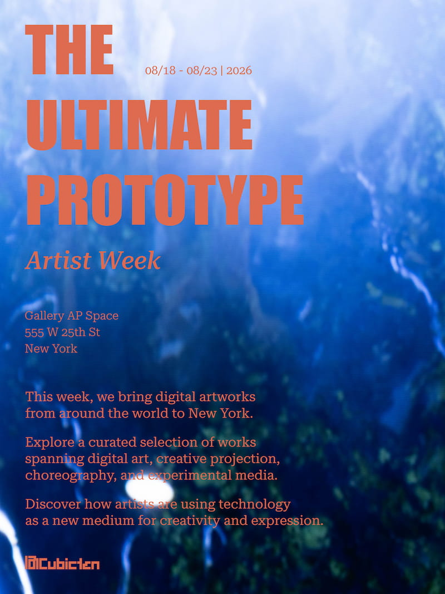
The Satura Kolam Project was featured in 'The Ultimate Prototype', an exhibition presented by Cubicten at Gallery AP SPACE in New York. As part of Cubicten’s 'International Artist Week', the project brought my exploration of the traditional square-based Kolam into a contemporary digital environment, where its transformed lines, patterns, and structures were presented through digital imagery, LED displays, projection and light. The exhibition explored new ways of experiencing art through the use of digital technologies, creating a setting in which the Satura Kolam Project was re-framed through digital imagery, light, and movement, allowing the changing patterns and structures of the Satura Kolams to be experienced within an immersive environment.
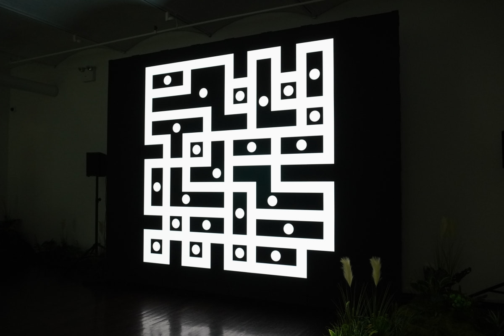
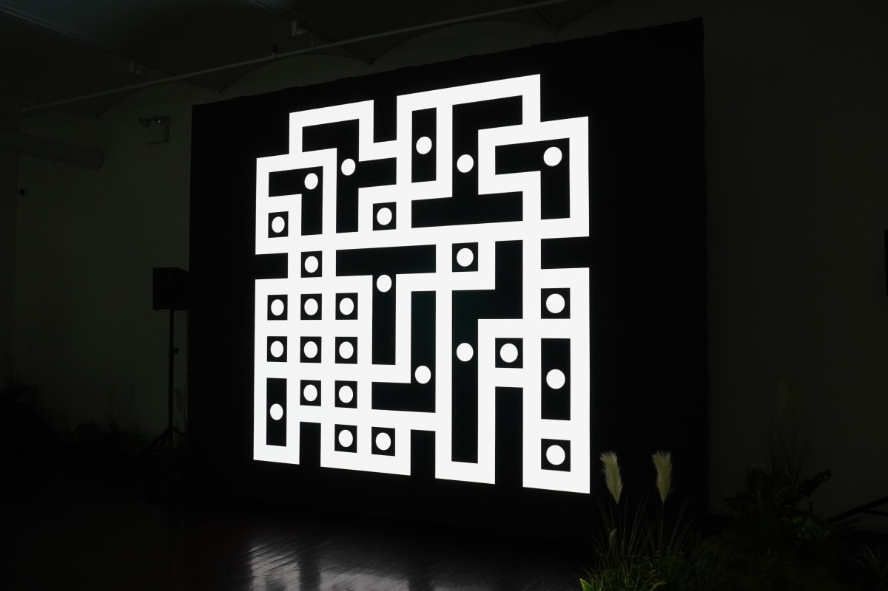
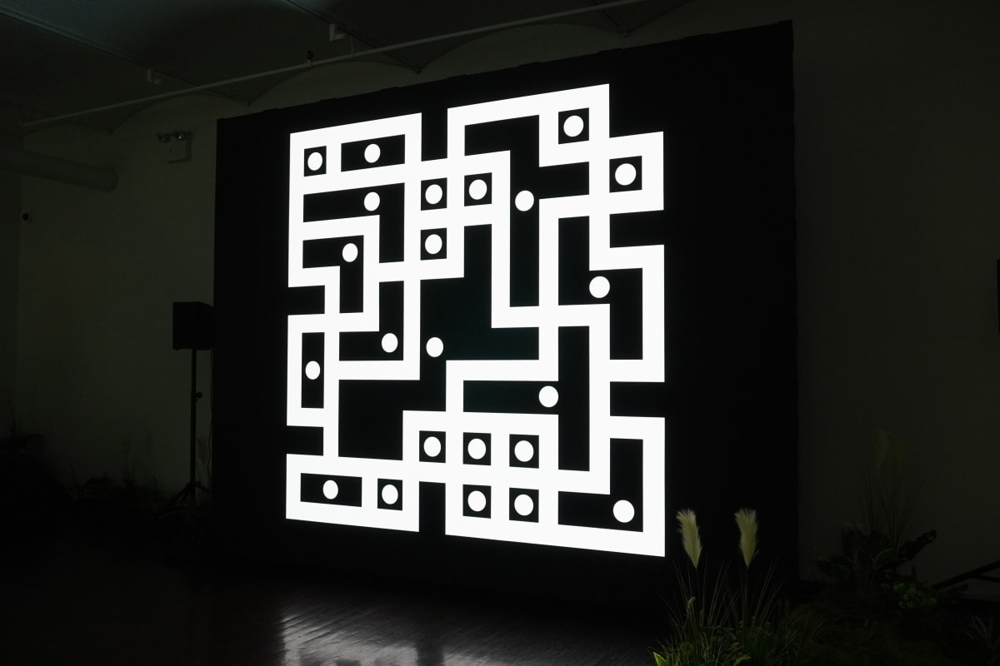
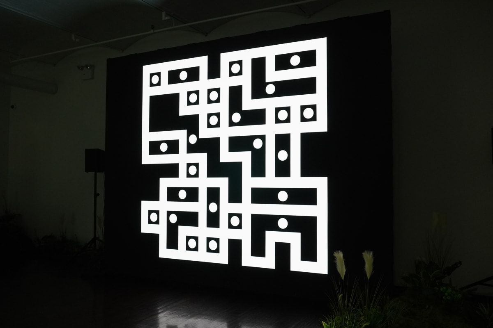
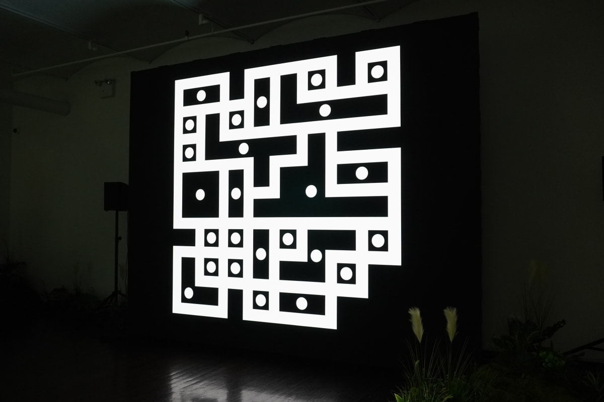
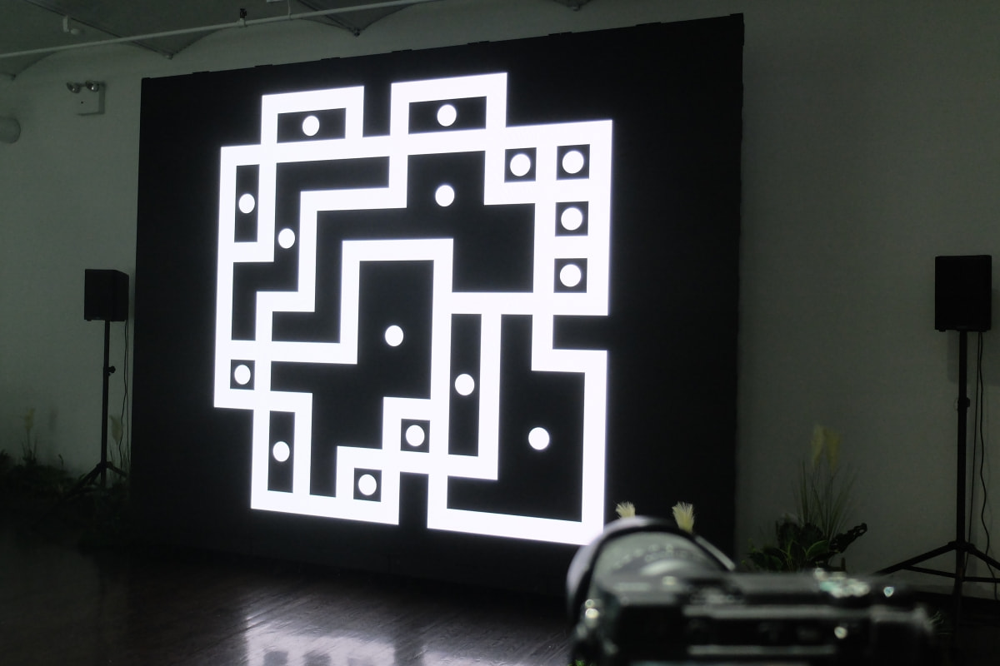
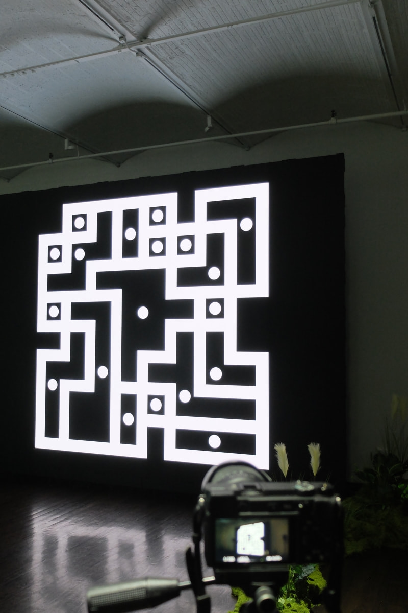
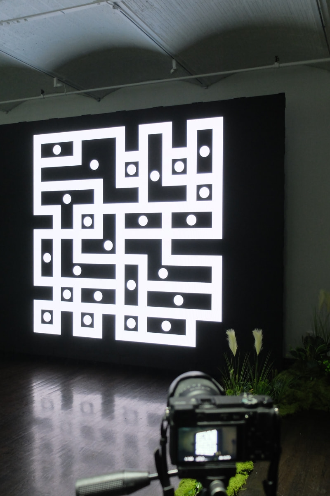
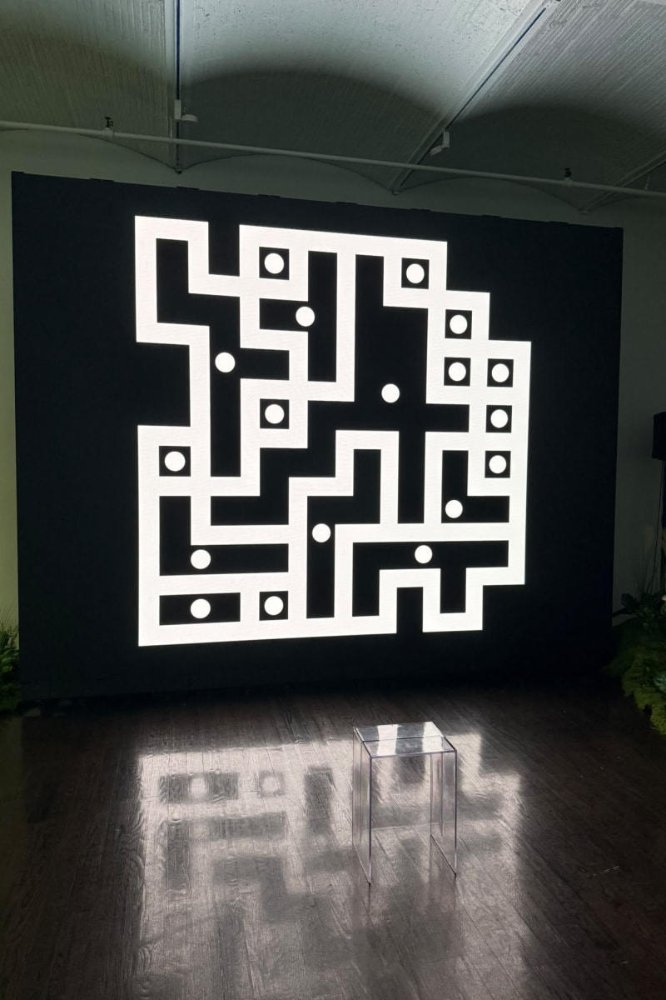
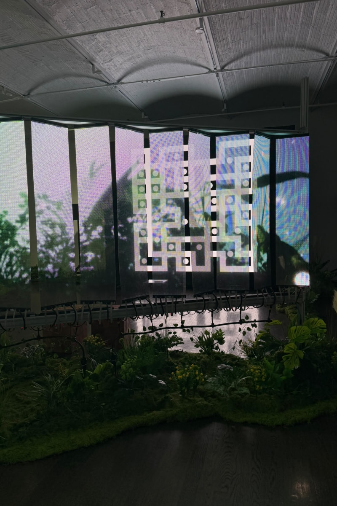
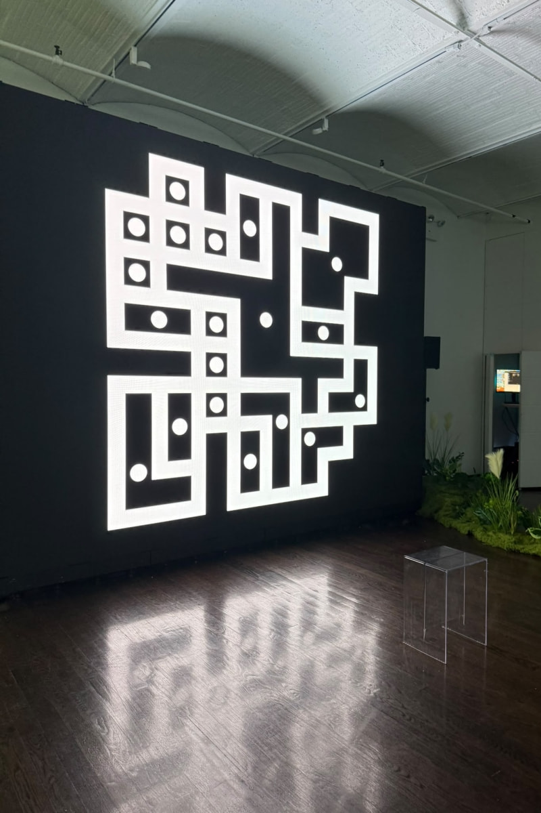
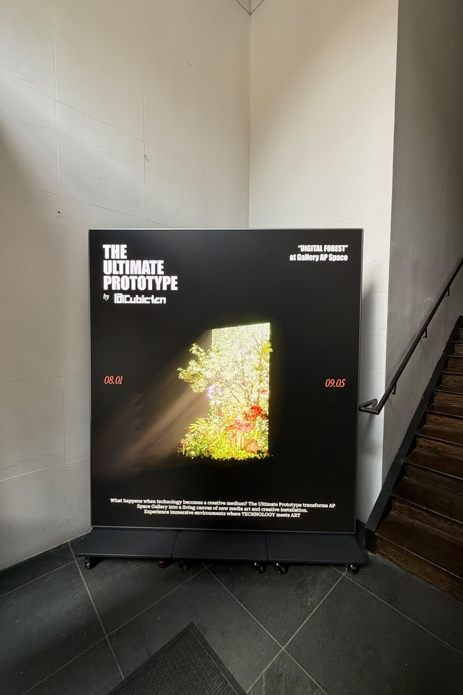